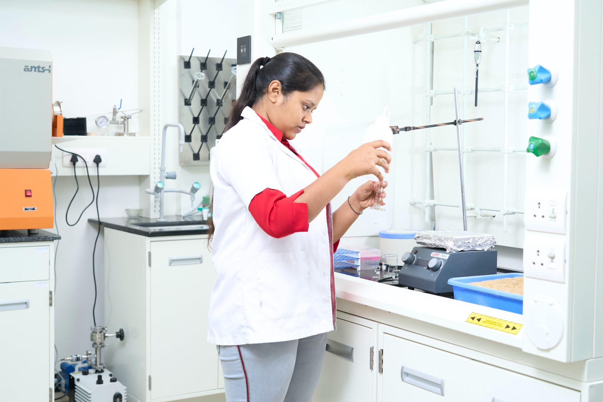
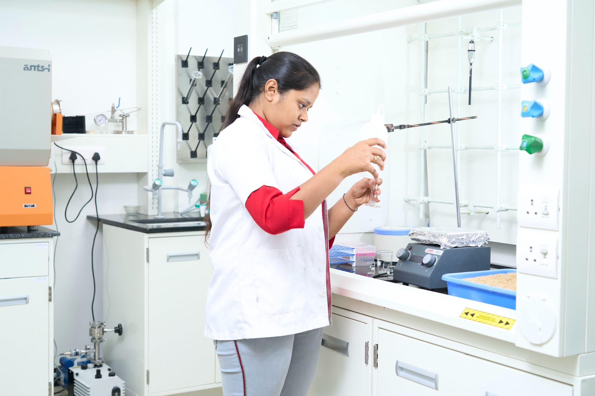

Indium Lab Recognized Under Aspire Program: Honored for developing a respiratory disease diagnostic sensor (August 28, 2024).**
**Dr. B. Lignesh Durai Secures First Place: Winner of the Idea Challenge at Aarambh 2024, held on February 16, 2024, at GITAM Venture Development Centre, Bengaluru.**
**Startup Milestone: Indium Lab registers two startups focused on healthcare innovation and food quality monitoring.**
Aspire Initiative Launched: Dr. Lignesh Durai unveils Indium Healthcare Technologies Under Aspire on August 28, 2024.
Breakthrough in Alzheimer’s Detection: Alpha team pioneers a wearable perspiration profiling system for early detection.


 
